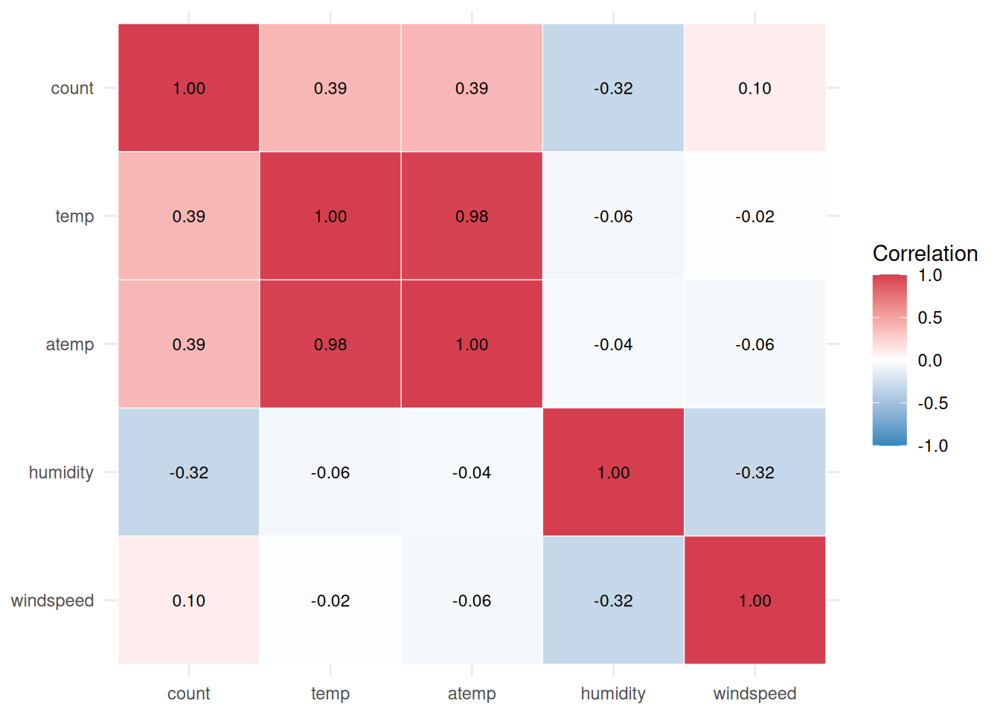
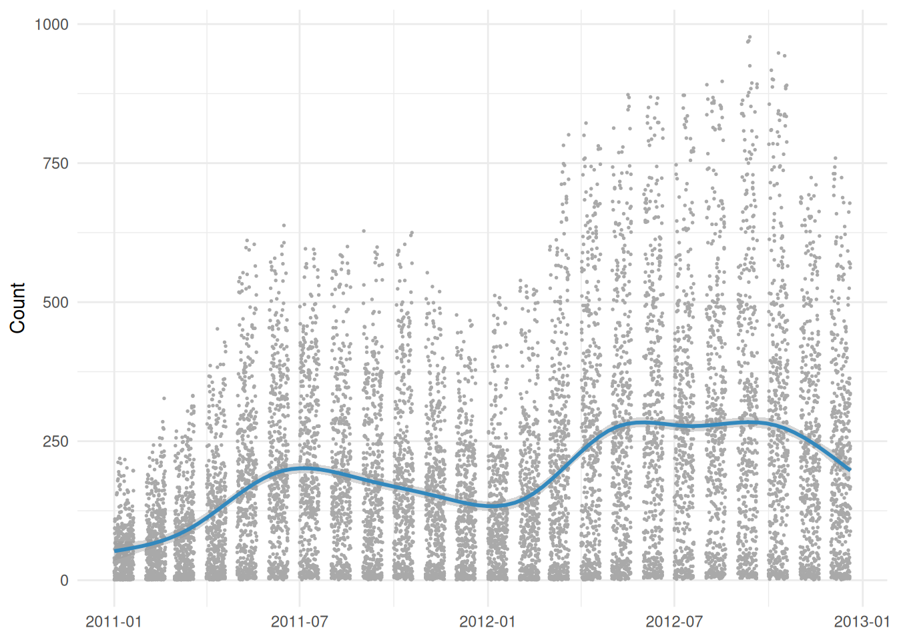
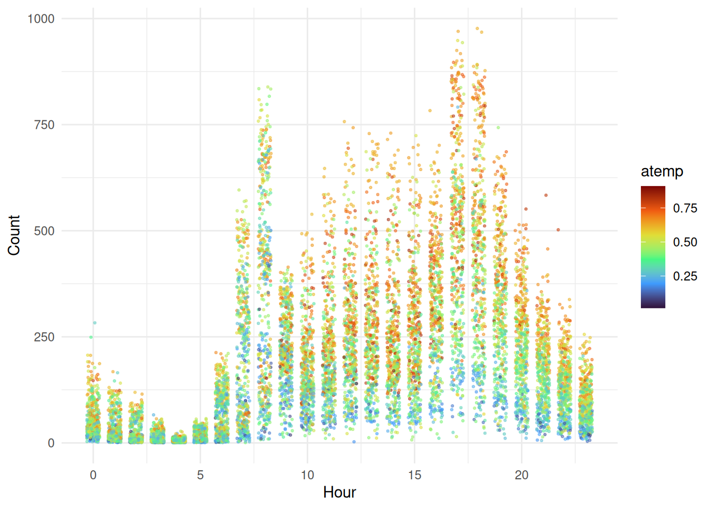
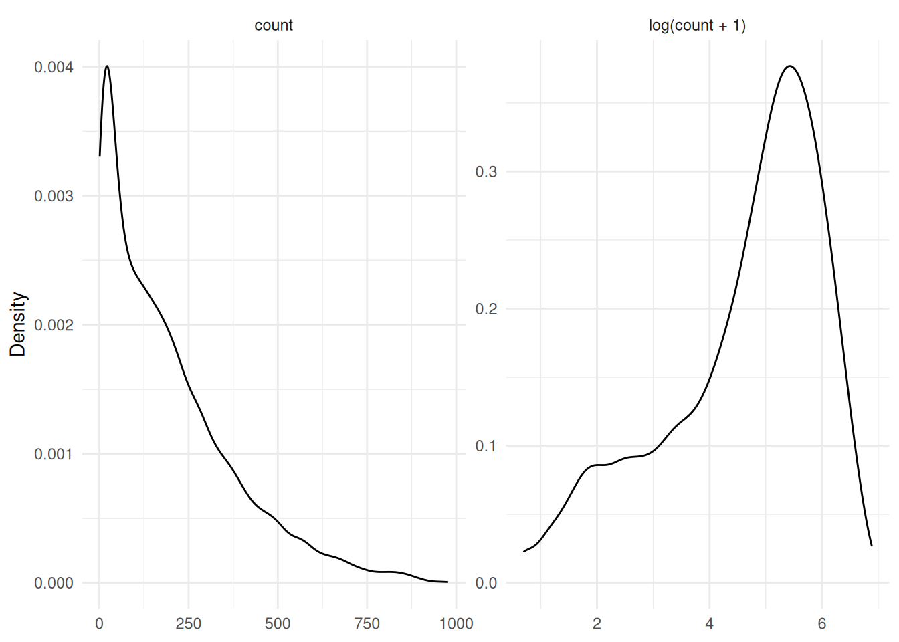
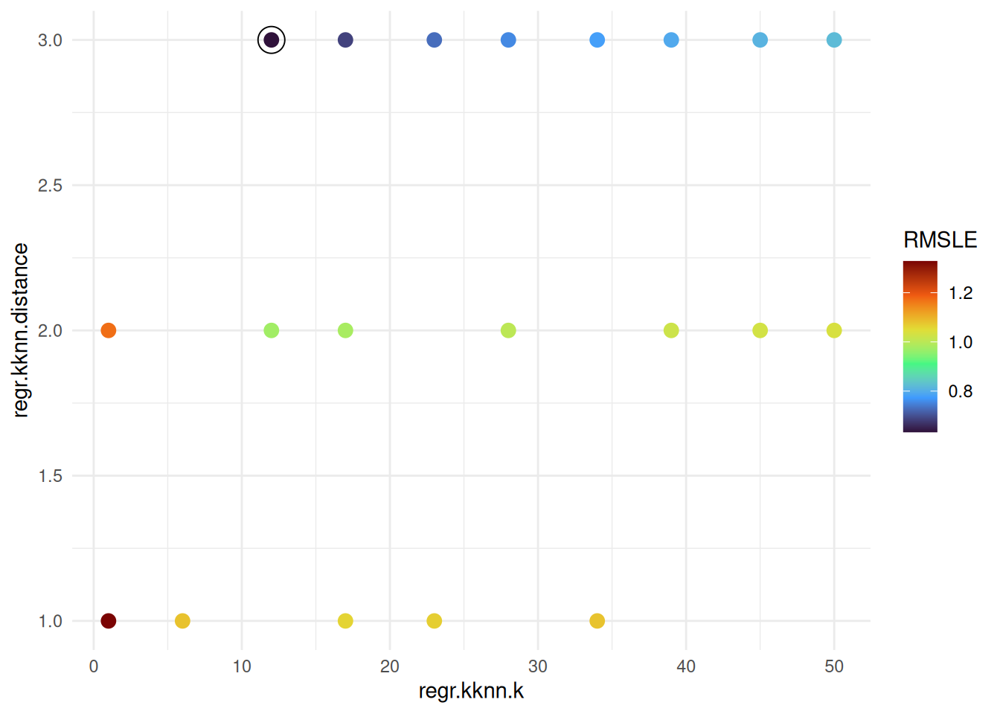
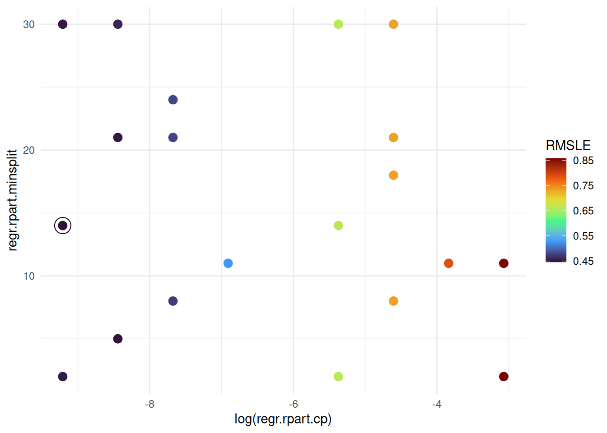
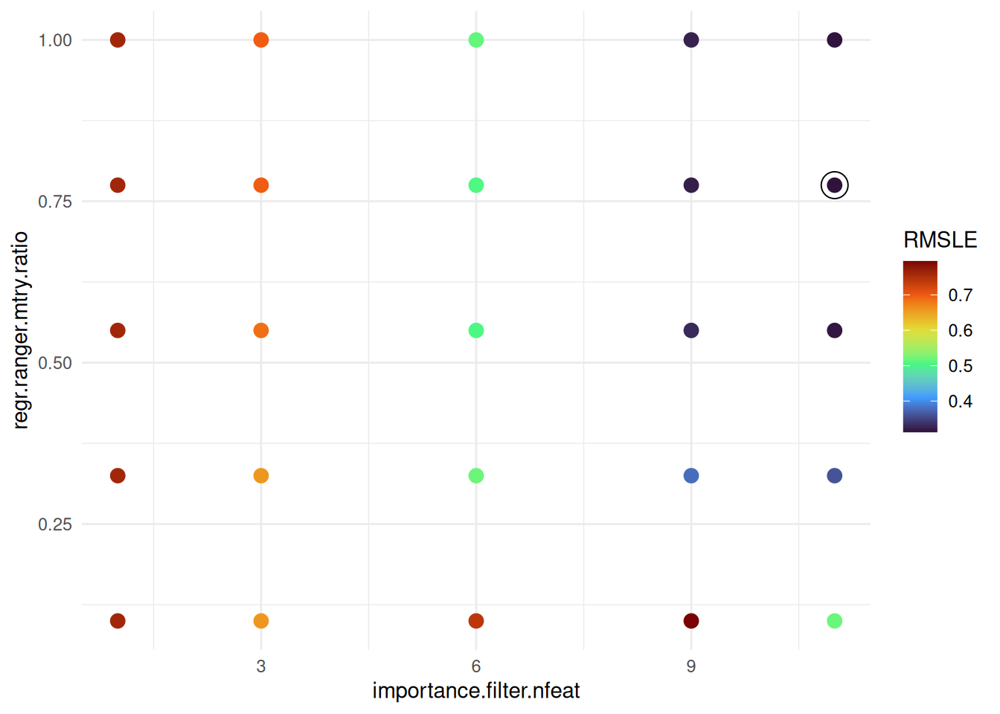
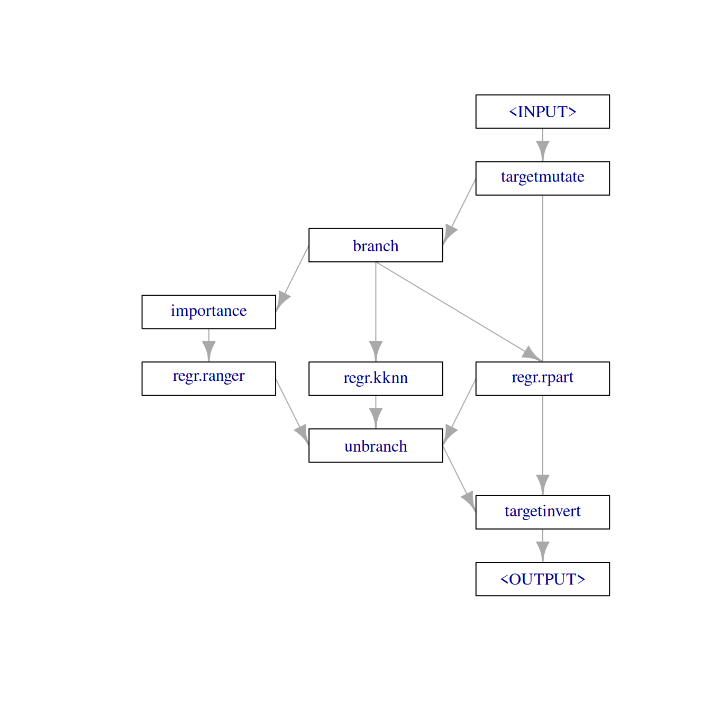
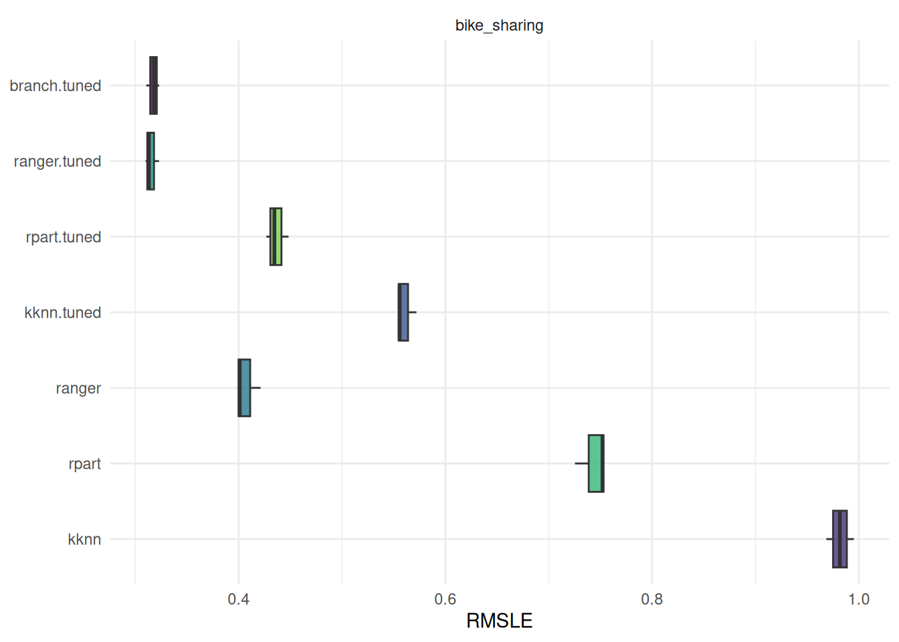
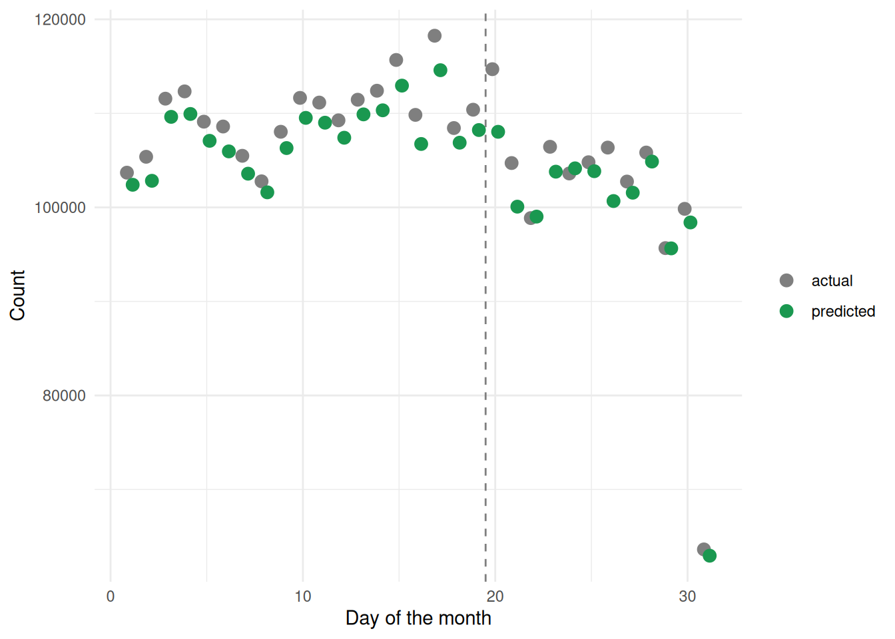

library(mlr3verse)
library(data.table)
library(ggplot2)Preamble
This use case was created as part of the Introduction to Machine Learning lecture at LMU Munich. The goal of the project was to create and compare one or several machine learning pipelines for the problem at hand, together with an exploratory analysis and an exposition of the results. The authors contributed the post to the gallery, and it was edited for better legibility. We want to thank the authors for allowing us to publish their results. Note that the correctness of the results cannot be guaranteed.
Introduction
Bike sharing is a network of publicly shared bicycles that can be rented for a certain period of time at different locations within a city and returned at any station. Suppliers of such networks must always have enough bicycles available, and the demand depends on a variety of factors such as the time of day and the weather. A forecasting system that predicts the demand from these factors helps to plan the distribution of bicycles. In this post, we develop such a system with mlr3verse.
We use the bike sharing data set by Fanaee-T and Gama (2013), which contains hourly rental counts of the Capital Bikeshare system in Washington, D.C. from 2011 and 2012. The same data was used in the Kaggle Bike Sharing Demand competition. After a short exploratory analysis, we engineer features and transform the target. We then tune a k-nearest neighbors, a decision tree, and a random forest learner and compare them with nested resampling. We also tune over the choice of the learner itself with a branched pipeline. Finally, we predict the demand on a held-out test set.
This tutorial assumes familiarity with the basics of mlr3tuning and mlr3pipelines. Consult the mlr3book if some aspects are not fully understandable. We load the mlr3verse package, data.table for data manipulation, and ggplot2 for plotting.
Data
The data is available from the UCI Machine Learning Repository. We download the archive and read the hourly data.
path_zip = tempfile(fileext = ".zip")
download.file("https://archive.ics.uci.edu/static/public/275/bike+sharing+dataset.zip", path_zip, quiet = TRUE)
bikes = fread(unzip(path_zip, files = "hour.csv", exdir = tempdir()))We create a timestamp from the date and the hour, convert the nominal features to factors with readable levels, and give some columns more descriptive names. The season is coded in the data as astronomical seasons, so January belongs to winter.
bikes[, datetime := as.POSIXct(dteday, tz = "UTC") + hr * 3600]
bikes = bikes[, list(
datetime,
season = factor(season, levels = 1:4, labels = c("winter", "spring", "summer", "fall")),
holiday = factor(holiday, levels = 0:1, labels = c("no", "yes")),
workingday = factor(workingday, levels = 0:1, labels = c("no", "yes")),
weather = factor(weathersit, levels = 1:4, labels = c("clear", "mist", "light rain", "heavy rain")),
temp,
atemp,
humidity = hum,
windspeed,
casual,
registered,
count = cnt
)]The columns of the data set have the following meaning. The weather variables are normalized to the interval \([0, 1]\).
| Column | Description |
|---|---|
datetime |
Date and hour of the observation |
season |
Winter, spring, summer, or fall |
holiday |
Whether the day is a public holiday |
workingday |
Whether the day is neither a weekend nor a holiday |
weather |
Clear or few clouds, mist, light rain or snow, and heavy rain or snow |
temp |
Temperature |
atemp |
“Feels like” temperature |
humidity |
Relative humidity |
windspeed |
Wind speed |
casual |
Number of rentals by non-registered users |
registered |
Number of rentals by registered users |
count |
Total number of rentals |
Like in the Kaggle competition, we use the first 19 days of each month as training data and the remaining days as test data. In contrast to the competition, the UCI data contains the true counts for the test days, so we can evaluate our final model on them.
data_train = bikes[mday(datetime) < 20L]
data_test = bikes[mday(datetime) >= 20L]
c(train = nrow(data_train), test = nrow(data_test))train test
10886 6493 Exploratory analysis
The figure below shows the correlations between the numeric variables of the training data. The temperature temp and the “feels like” temperature atemp are almost perfectly correlated, which makes sense since both measure nearly the same thing. The number of rentals count is positively correlated with both temperatures and negatively correlated with the humidity.

The demand over the whole period of the training data shows a positive trend and a seasonal pattern, with a higher demand in summer than in winter.

The demand strongly depends on the hour of the day. The figure below shows peaks in the morning and in the late afternoon, which correspond to commuting times. At higher temperatures, the demand is generally higher.

Preprocessing
The total count is the sum of the rentals by casual and registered users.
all.equal(data_train$count, data_train$casual + data_train$registered)[1] TRUEWe cannot use casual and registered as features since we only know them once we also know the target count. We also drop temp because it carries almost the same information as atemp.
Each timestamp is unique and therefore has no predictive value on its own. However, if we split it into the hour, the weekday, the month, and the year, we obtain useful features. The function engineer_features() adds these features and removes the columns that we do not use.
engineer_features = function(data) {
data = copy(data)
data[, `:=`(
hour = factor(hour(datetime)),
weekday = factor(weekdays(datetime)),
month = factor(month(datetime)),
year = factor(year(datetime))
)]
data[, c("datetime", "casual", "registered", "temp") := NULL]
data
}
data_train_features = engineer_features(data_train)
data_test_features = engineer_features(data_test)
Tip
po("datefeatures") offers an alternative that automatically extracts a set of date-related features from a POSIXct column inside a pipeline.
Warning
We assume that we want to describe the existing data as well as possible rather than forecast the demand of future years. In a forecasting scenario, we would need a time-aware resampling strategy so that the model is evaluated on data from the future.
We create a regression task from the training data with count as the target.
task_bikes = as_task_regr(data_train_features, target = "count", id = "bike_sharing")
task_bikes
── <TaskRegr> (10886x12) ───────────────────────────────────────────────────────────────────────────────────────────────
• Target: count
• Properties: -
• Features (11):
• fct (8): holiday, hour, month, season, weather, weekday, workingday, year
• dbl (3): atemp, humidity, windspeedTarget transformation
The target count is highly right-skewed. The figure below shows that a transformation \(z = \log(x + 1)\) makes its distribution much less skewed.

The learners are trained on the transformed target, and their predictions must be transformed back to the original scale with \(x = \exp(z) - 1\). mlr3pipelines automates this with ppl("targettrafo"). The pipeline transforms the target with po("targetmutate") before training and inverts the transformation of the predictions afterwards. The function log_target() wraps a learner or graph in this pipeline and returns a GraphLearner with a short id.
log_target = function(graph, id) {
trafo = po("targetmutate",
trafo = function(x) log1p(x),
inverter = function(x) list(response = expm1(x$response))
)
learner = as_learner(ppl("targettrafo", graph = graph, trafo_pipeop = trafo))
learner$id = id
learner
}Modeling
We consider three learners: k-nearest neighbors, a decision tree, and a random forest. We tune two hyperparameters of each learner with an AutoTuner, which is a learner that tunes its hyperparameters during training. To compare the learners fairly, all AutoTuners share the same settings:
- We estimate the performance of a hyperparameter configuration with a 3-fold cross-validation. In practice, we would use more folds, but we keep the computational costs low here.
- Like the Kaggle competition, we minimize the root mean squared log error (RMSLE).
- We use a grid search.
resampling_inner = rsmp("cv", folds = 3L)
measure = msr("regr.rmsle")k-nearest neighbors
We tune the number of neighbors k and the parameter distance of the Minkowski distance. The grid search with a resolution of 10 creates 30 configurations, from which the terminator randomly selects 20.
learner_kknn = lrn("regr.kknn")
at_kknn = auto_tuner(
tuner = tnr("grid_search", resolution = 10L),
learner = log_target(learner_kknn, id = "kknn"),
resampling = resampling_inner,
measure = measure,
terminator = trm("evals", n_evals = 20L),
search_space = ps(
regr.kknn.k = p_int(lower = 1L, upper = 50L),
regr.kknn.distance = p_int(lower = 1L, upper = 3L)
)
)
at_kknn$train(task_bikes)
at_kknn$tuning_result[, list(regr.kknn.k, regr.kknn.distance, regr.rmsle)] regr.kknn.k regr.kknn.distance regr.rmsle
<int> <int> <num>
1: 12 3 0.6335987The figure below shows the RMSLE of the evaluated configurations. A larger order of the Minkowski distance leads to a clearly lower error. With very few neighbors, the model overfits, and with many neighbors, the estimate becomes too smooth. The best configuration uses distance = 3 and a moderate number of neighbors.

Decision tree
For the decision tree, we tune minsplit, the minimum number of observations in a node for a split to be attempted, and the complexity parameter cp. A split that does not decrease the overall lack of fit by a factor of cp is not attempted. We search cp on a log scale because small values are more interesting.
learner_rpart = lrn("regr.rpart")
at_rpart = auto_tuner(
tuner = tnr("grid_search", resolution = 10L),
learner = log_target(learner_rpart, id = "rpart"),
resampling = resampling_inner,
measure = measure,
terminator = trm("evals", n_evals = 20L),
search_space = ps(
regr.rpart.minsplit = p_int(lower = 2L, upper = 30L),
regr.rpart.cp = p_dbl(lower = 1e-4, upper = 0.1, logscale = TRUE)
)
)
at_rpart$train(task_bikes)
at_rpart$tuning_result[, list(regr.rpart.minsplit, regr.rpart.cp = exp(regr.rpart.cp), regr.rmsle)] regr.rpart.minsplit regr.rpart.cp regr.rmsle
<int> <num> <num>
1: 14 1e-04 0.4461599The complexity parameter dominates the performance. A lower cp reduces pruning and results in larger trees, which perform better on this data set. The influence of minsplit is small.

Random forest
For the random forest, we combine tuning with feature selection. First, we calculate the impurity importance of the features with a random forest and the importance filter from mlr3filters.
learner_importance = lrn("regr.ranger", importance = "impurity")
filter_importance = flt("importance", learner = learner_importance)
filter_importance$calculate(task_bikes)
as.data.table(filter_importance) feature score
<char> <num>
1: hour 166072130.6
2: atemp 42047138.4
3: humidity 31324148.0
4: year 25844848.0
5: month 19653122.7
6: season 11299355.1
7: windspeed 11185695.1
8: workingday 10921182.9
9: weekday 10792609.8
10: weather 6365419.0
11: holiday 751904.4The hour of the day is by far the most important feature, followed by the temperature, the humidity, and the year. Some features, such as holiday, contribute little. To test whether the random forest benefits from dropping them, we build a graph that keeps only the filter.nfeat most important features before fitting the random forest.
learner_ranger = lrn("regr.ranger")
graph_ranger = po("filter", filter = filter_importance, filter.nfeat = 11L) %>>%
po("learner", learner_ranger)We tune the number of selected features importance.filter.nfeat and the hyperparameter mtry.ratio. The latter is the fraction of the selected features that are randomly drawn as split candidates in each node. Tuning the ratio instead of mtry itself ensures that the number of split candidates never exceeds the number of selected features. The grid with a resolution of 5 contains 25 configurations, which we evaluate all.
at_ranger = auto_tuner(
tuner = tnr("grid_search", resolution = 5L),
learner = log_target(graph_ranger, id = "ranger"),
resampling = resampling_inner,
measure = measure,
search_space = ps(
importance.filter.nfeat = p_int(lower = 1L, upper = 11L),
regr.ranger.mtry.ratio = p_dbl(lower = 0.1, upper = 1)
)
)
at_ranger$train(task_bikes)
at_ranger$tuning_result[, list(importance.filter.nfeat, regr.ranger.mtry.ratio, regr.rmsle)] importance.filter.nfeat regr.ranger.mtry.ratio regr.rmsle
<int> <num> <num>
1: 11 0.775 0.3123926The error decreases with the number of selected features, and the best configurations use 9 or all 11 features. With many features, an mtry.ratio of 0.5 or higher works best, while very small values perform poorly.

Tuning over learners
Instead of tuning each learner separately, we can also treat the choice of the learner as a hyperparameter. We create a branched pipeline with ppl("branch") that contains the three learners, and wrap it in the target transformation. The hyperparameter branch.selection selects the learner.
graph_branch = ppl("branch", list(
kknn = learner_kknn,
rpart = learner_rpart,
ranger = graph_ranger
))
learner_branch = log_target(graph_branch, id = "branch")
learner_branch$graph$plot()
The search space reuses the ranges from above. The hyperparameters of a learner are only active if the learner is selected, which we express with the depends argument. We use a random search with 30 evaluations because a grid over the combined space would be too large.
search_space_branch = ps(
branch.selection = p_fct(c("kknn", "rpart", "ranger")),
regr.kknn.k = p_int(lower = 1L, upper = 50L, depends = branch.selection == "kknn"),
regr.kknn.distance = p_int(lower = 1L, upper = 3L, depends = branch.selection == "kknn"),
regr.rpart.minsplit = p_int(lower = 2L, upper = 30L, depends = branch.selection == "rpart"),
regr.rpart.cp = p_dbl(lower = 1e-4, upper = 0.1, logscale = TRUE, depends = branch.selection == "rpart"),
importance.filter.nfeat = p_int(lower = 1L, upper = 11L, depends = branch.selection == "ranger"),
regr.ranger.mtry.ratio = p_dbl(lower = 0.1, upper = 1, depends = branch.selection == "ranger")
)
at_branch = auto_tuner(
tuner = tnr("random_search"),
learner = learner_branch,
resampling = resampling_inner,
measure = measure,
terminator = trm("evals", n_evals = 30L),
search_space = search_space_branch
)Benchmark
The tuning results above are optimistically biased because the same data was used to select the configuration and to estimate its performance. To obtain an unbiased estimate, we use nested resampling. benchmark() evaluates every AutoTuner with an outer 3-fold cross-validation, and in each outer fold the AutoTuner tunes again on the training data only. We include the three learners with default hyperparameters as a baseline. These are also wrapped in the target transformation so that the comparison isolates the effect of tuning.
learners = list(
log_target(learner_kknn, id = "kknn"),
log_target(learner_rpart, id = "rpart"),
log_target(graph_ranger, id = "ranger"),
at_kknn,
at_rpart,
at_ranger,
at_branch
)
design = benchmark_grid(
tasks = task_bikes,
learners = learners,
resamplings = rsmp("cv", folds = 3L)
)
bmr = benchmark(design, store_models = TRUE)The table and the figure below show the RMSLE in the outer folds.
bmr$aggregate(measure)[order(regr.rmsle), list(learner_id, regr.rmsle)] learner_id regr.rmsle
<char> <num>
1: ranger.tuned 0.3153921
2: branch.tuned 0.3173665
3: ranger 0.4070943
4: rpart.tuned 0.4365559
5: kknn.tuned 0.5606262
6: rpart 0.7437224
7: kknn 0.9818190
Tuning improves all three learners compared to their default hyperparameters. The k-nearest neighbors learner and the decision tree benefit the most. For the decision tree, the default complexity parameter prunes the tree too strongly. The tuned random forest performs best. The branched pipeline reaches a similar performance because the random search selects the random forest in every outer fold, as the table below shows. Note that the branched pipeline evaluates fewer random forest configurations than the dedicated AutoTuner for the same budget, so tuning over learners is not free.
Since we stored the models with store_models = TRUE, we can inspect which learner the branched pipeline selected in each outer fold.
rr_branch = bmr$resample_result(7L)
extract_inner_tuning_results(rr_branch)[, list(iteration, branch.selection, regr.rmsle)] iteration branch.selection regr.rmsle
<int> <char> <num>
1: 1 ranger 0.3274521
2: 2 ranger 0.3451450
3: 3 ranger 0.3440505Prediction
We choose the tuned random forest, which was already trained on the complete training data, and predict the demand on the test days. Since the UCI data contains the true counts of the test days, we can evaluate the prediction on truly unseen data.
prediction = at_ranger$predict_newdata(data_test_features)
prediction$score(measure)regr.rmsle
0.4252552 The error on the test days is noticeably higher than the estimate from nested resampling. The cross-validation splits the observations randomly, so different hours of the same day end up in the training and test folds. The model can exploit the similarity of hours within a day, for example, the shared weather. The test days, in contrast, are completely unseen. A resampling strategy that keeps all hours of a day in the same fold, such as rsmp("custom_cv") grouped by date, would give a more realistic estimate.
The figure below compares the predicted and the actual demand for each day of the month. The training data covers days 1 to 19 and the test data covers days 20 to 31. The predictions follow the actual values closely on both parts of the data, but they are systematically slightly too low. This is a consequence of the log transformation. The model predicts the mean of \(\log(x + 1)\), and transforming this mean back estimates something closer to the median than to the mean of the counts. Since the counts are right-skewed, the median is lower than the mean. Note that the predictions on the training days are made on data the model has seen during training and are therefore optimistic. The low value on day 31 occurs because only 7 months have 31 days.

Conclusion
We used mlr3verse to tune, benchmark, and compare three learners for predicting the hourly demand of a bike sharing system. mlr3pipelines handled the log transformation of the target, the feature selection with an importance filter, and the choice between learners in a branched pipeline. Tuning two hyperparameters of each learner considerably improved its performance, and nested resampling allowed a fair comparison of the tuned learners. The tuned random forest performed best. Its error on the held-out test days was higher than the cross-validation estimate, which shows that the resampling strategy should match how the model is used.
Further improvements could come from a larger tuning budget, a resampling strategy grouped by day, or a correction of the systematic underestimation caused by the log transformation.
References
Fanaee-T, Hadi, and Joao Gama. 2013. “Event Labeling Combining Ensemble Detectors and Background Knowledge.” Progress in Artificial Intelligence, 1–15.